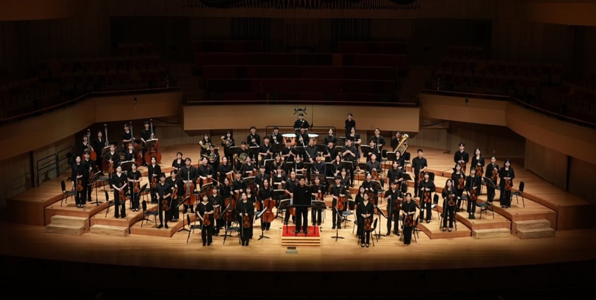
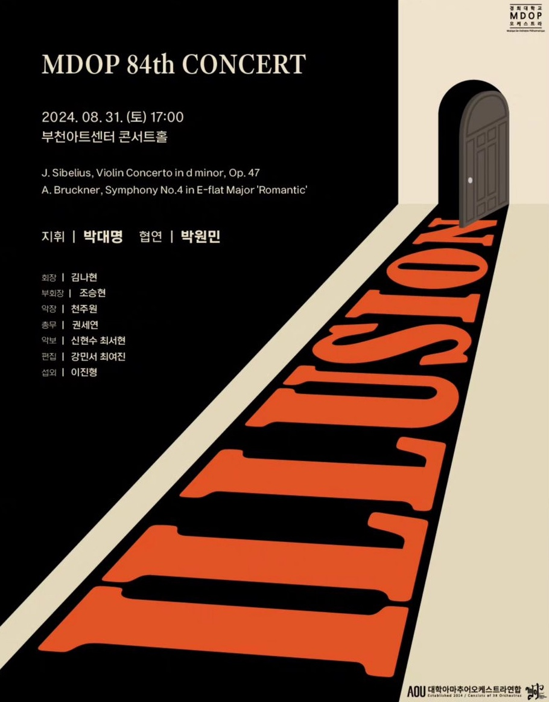
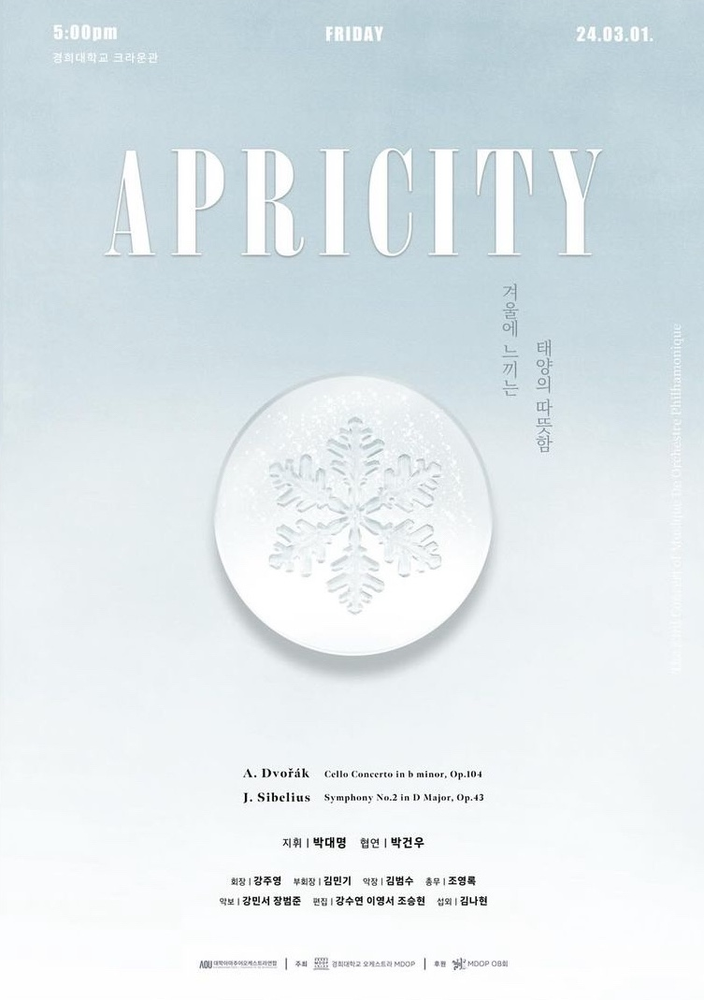
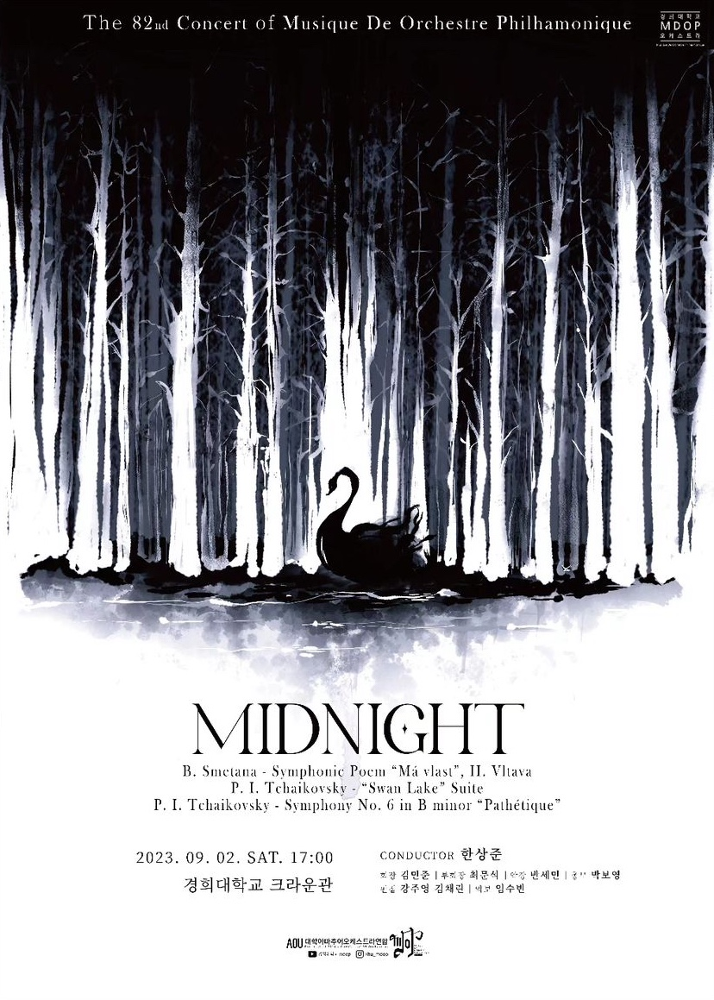
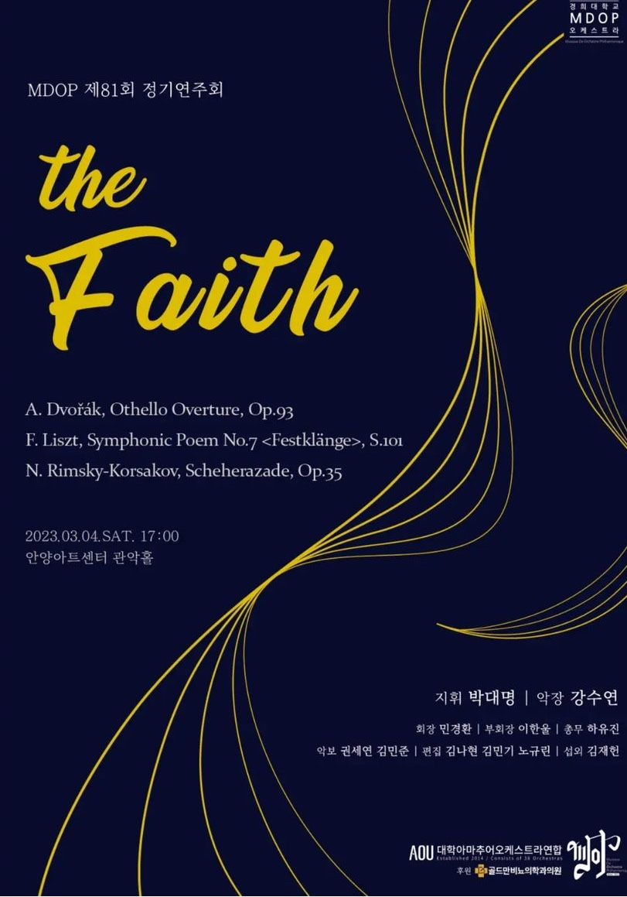
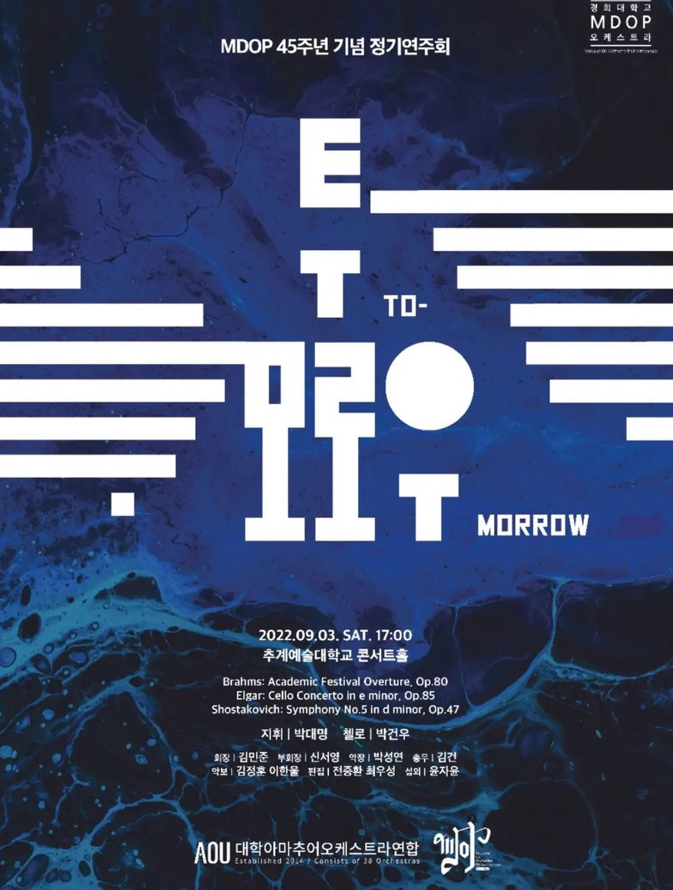

“아름다운 선율을 통해 모두가 하나 되는 오케스트라 동아리"
경희대학교 아마추어 오케스트라 KHUMDOP는 1977년에 창단된 중앙동아리로,
클래식 음악에 대한 열정과 사랑을 바탕으로 활동하고 있습니다.
매년 두 차례의 정기 연주회를 개최하며, 학기 중에도 다양한 연습과 앙상블을 통해 단원들의 음악적 역량을 키우고 있습니다.
악기 연주 경험이 없는 초보자부터 숙련자까지 누구나 참여할 수 있으며,
함께 연주하며 음악의 조화와 팀워크를 경험할 수 있습니다.
KHUMDOP는 음악을 통해 단원 간의 유대감을 형성하며,
연주를 통해 관객들에게 클래식 음악의 아름다움을 전달하고자 노력합니다.
음악을 사랑하는 경희인이라면 누구든지 함께할 수 있는 열린 동아리로,
단순한 연주를 넘어 음악적 교감을 추구합니다.
KHUMDOP는 아름다운 선율을 통해 모두가 하나 되는 경험을 선사하는 특별한 동아리입니다.
“아름다운 선율을 통해 모두가 하나 되는 오케스트라 동아리"
경희대학교 아마추어 오케스트라 KHUMDOP는 1977년에 창단된 중앙동아리로,
클래식 음악에 대한 열정과 사랑을 바탕으로 활동하고 있습니다.
매년 두 차례의 정기 연주회를 개최하며, 학기 중에도 다양한 연습과 앙상블을 통해 단원들의 음악적 역량을 키우고 있습니다.
악기 연주 경험이 없는 초보자부터 숙련자까지 누구나 참여할 수 있으며,
함께 연주하며 음악의 조화와 팀워크를 경험할 수 있습니다.
KHUMDOP는 음악을 통해 단원 간의 유대감을 형성하며,
연주를 통해 관객들에게 클래식 음악의 아름다움을 전달하고자 노력합니다.
음악을 사랑하는 경희인이라면 누구든지 함께할 수 있는 열린 동아리로,
단순한 연주를 넘어 음악적 교감을 추구합니다.
KHUMDOP는 아름다운 선율을 통해 모두가 하나 되는 경험을 선사하는 특별한 동아리입니다.





1977 경희대학교 MDOP 창단
2018 제 72 · 73회 정기연주회
2018.03.03 지휘 | 이은구 협연 | 이기준
2018.08.31 지휘 | 박영태 악장 | 박성연 협연 | 이연지
2019 제 74 · 75회 정기연주회
2019.03.02 지휘 | 강성우 악장 | 장세민
2019.09.07 지휘 | 김성욱 협연 | 홍승아
2020 제 76회 정기연주회
2020 지휘 | 오성빈
2021 제 77 · 78회 정기연주회
2021 지휘 | 오성빈
2021.09.03 지휘 | 오성빈 악장 | 이세형 협연 | 전재현
2022 제 79 · 80회 정기연주회
2022.03.05 지휘 | 오성빈 협연 | 홍현
2022.09.03 지휘 | 박대명 협연 | 박건우
2023 제 81 · 82회 정기연주회
2023.03.04 지휘 | 박대명 악장 | 강수연
2023.09.02 지휘 | 한상준 악장 | 반세빈
2024 제 83 · 84회 정기연주회
2024.03.01 지휘 | 박대명 협연 | 박건우
2024.11.08 지휘 | 박대명 협연 | 박원민